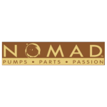
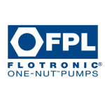
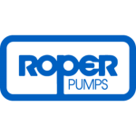
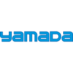
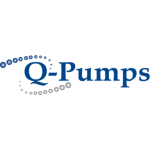
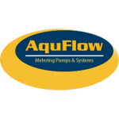
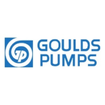

La fuerza detrás
de tu industria.
Movemos lo que mueve a México. Bombas, refacciones y criterio técnico para tu operación.
Selección con
asesoría técnica.
Marcas originales
y alternativas OEM.
De nuestra bodega
a todo México.
Cada fluido.
Su bomba.
Nueve familias de bombas. Avanza con el scroll o elige una para conocerla.

Bombas centrífugas
Para mover agua y fluidos de baja viscosidad en los procesos de tu industria.
La ingeniería tiene nombre.
Trabajamos con estas marcas.







El proceso manda.
Nosotros escuchamos.
Un mismo fluido puede plantear desafíos distintos. Cuéntanos qué necesitas mover y bajo qué condiciones.

Alimentos y bebidas
Desde ingredientes líquidos hasta productos viscosos. Equipos para transferencia y procesos sanitarios, seleccionados según tu producto.
Platicar sobre mi procesoASIAN PUMPS S.A. DE C.V.
Una bomba es equipo.
Elegirla bien es ingeniería.
Somos una distribuidora mexicana de equipo de bombeo industrial. Acompañamos a tu equipo en la selección de bombas, refacciones y alternativas para su aplicación.
estados, un mismo compromiso:
mantener tu operación en movimiento.
Selección de equipo
Refacciones y accesorios
Servicio técnico industrial
¿Qué necesitas
mover?
Un fluido, un equipo por reemplazar o un proyecto desde cero. Empecemos por ahí.
(55) 2126-6091También en (55) 8854-7132